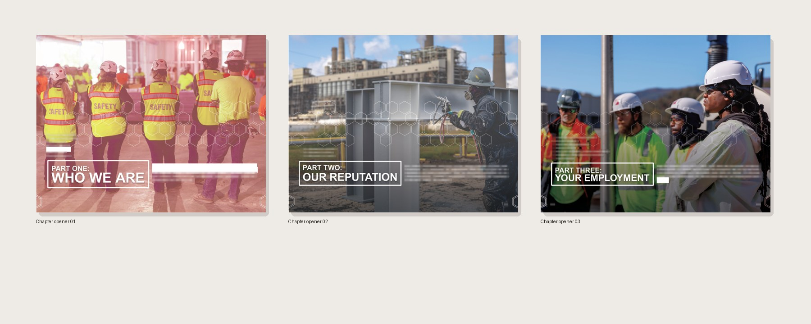
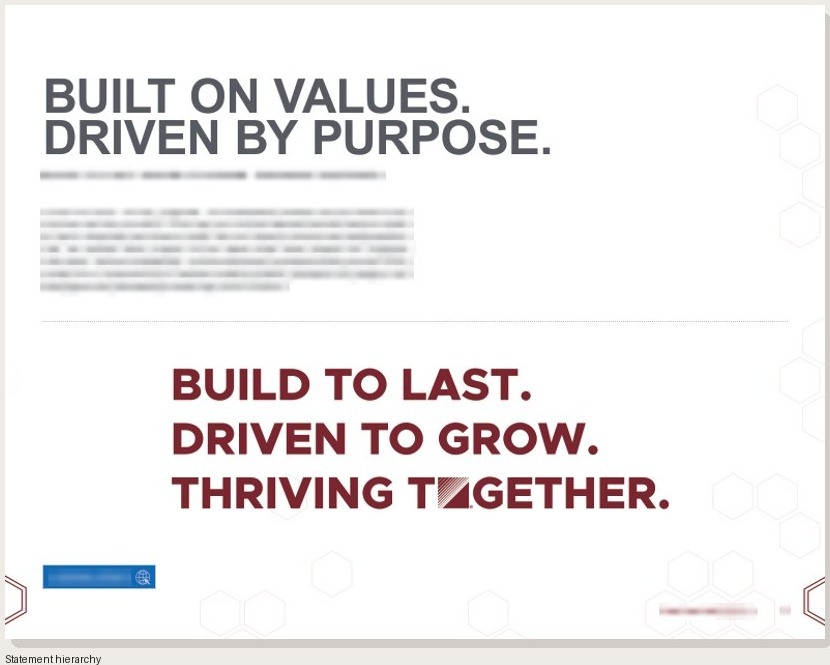
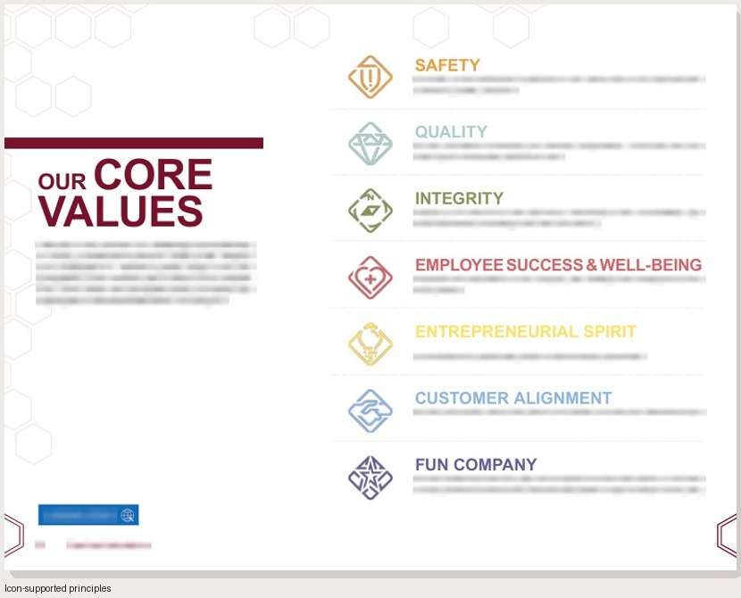
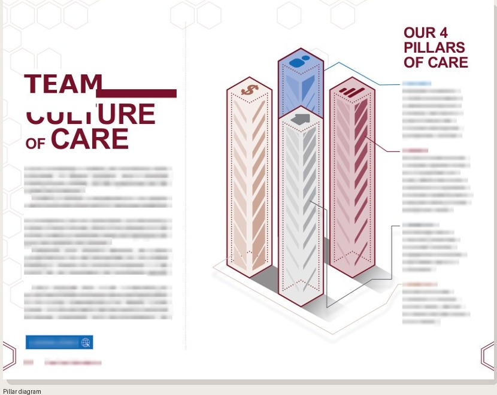
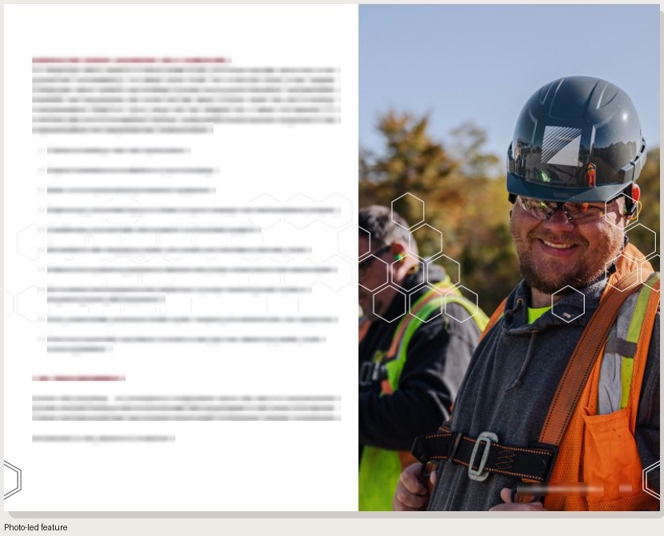

Publication & Environmental Design
Performance Contracting, Inc.
Freelance publication and environmental design for a top national specialty contractor, extending PCI's existing brand across an employee handbook and a set of recruitment concepts.

A system in print
Dense material, given room to move.
The handbook pairs long-form policy with a clear editorial rhythm. The same geometric language later became a useful starting point for recruitment and environmental concepts.

Principles of Business Conduct
A publication system for consequential information.
The 42-page handbook organizes leadership context, workplace policy, and ethical standards for hourly employees. As a freelance designer, I created the layout, typography, illustration, and production design while working within PCI's existing brand.
- Format
- 42-page publication
- Audience
- Hourly employees company-wide
- Contribution
- Editorial hierarchy, illustration, and production
Publication System in Use
Pacing first. Detail where it matters.
Chapter openings establish rhythm before the system shifts into statements, principles, diagrams, and editorial features. Small internal copy remains neutralized in these approved presentation boards.





These are four coordinated artifacts presented individually, not one page or a shared paper format.

Closing the publication
The hexagon becomes geography.
The map turns the recurring shape into a clear closing device. It stands alone here, without the red back-cover page competing with the red hero.


What reached people
One implemented publication. One exploratory extension.
The 2026 handbook was distributed to hourly employees company-wide. The banner and table-display directions remained concepts for PCI's teams. Together, they show how an existing brand language can stretch across information density and physical scale without becoming a corporate rebrand.
Artifact formats are preserved by source: landscape US Letter, landscape Tabloid, portrait, and mixed-format compositions are not normalized into a single crop. Protected internal copy remains neutralized in the approved presentation assets.